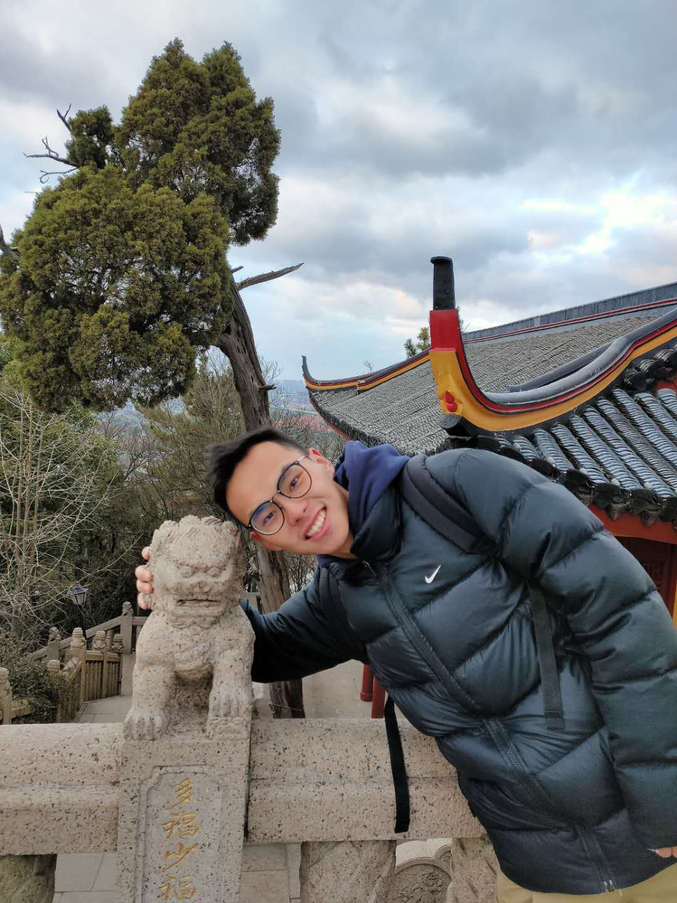

Jinwei Xing (邢津炜)
Hi, I'm Jinwei Xing, a second-year PhD student in Department of Cognitive Science, University of California, Irvine. Before that, I received the B.S. degree in Computer Science from Sichuan University. I'm now working with Professor Jeff Krichmar and Professor Emre Neftci on Artificial Intelligence, especially inspired by cognitive neuroscience.
I'm interested in implementing higher-level intelligence and AGI is my pursue. I mainly think about it from three perspectives: perception, higher cognitive capabilities and decision making. In decision making, I focus on deep reinforcement learning as the solution. As for higher cognitive capabilities, I'm most interested in the capability of relational learning and reasoning. Besides that, for perception, I also believe a structuerd representation is necessary for AGI and thus looks into disentangled representation and object-oriented scene decomposition.
